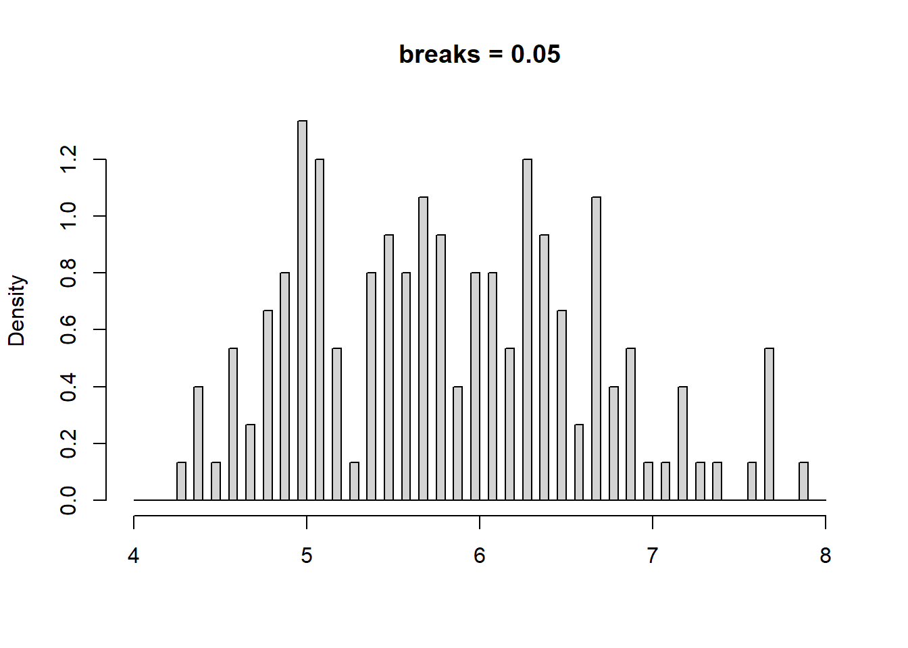
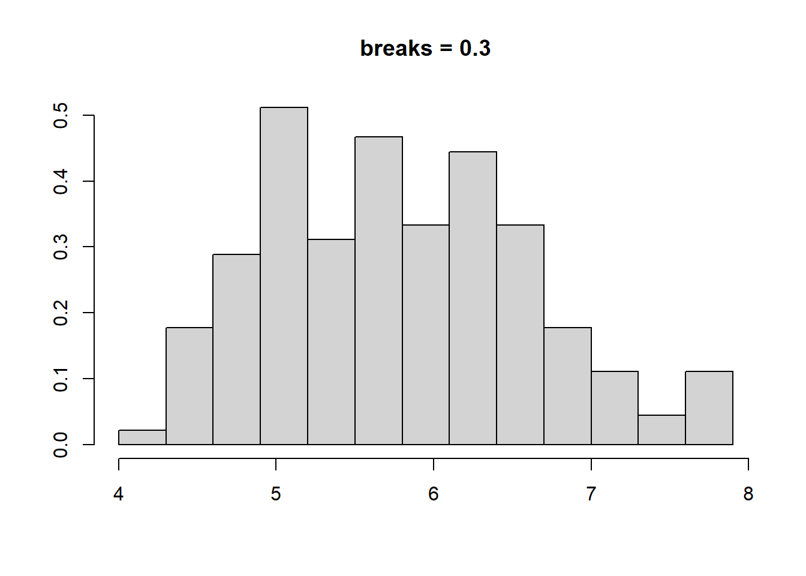
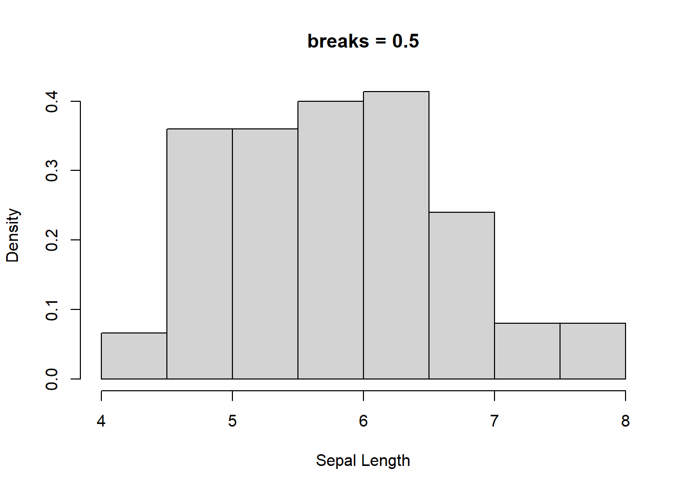
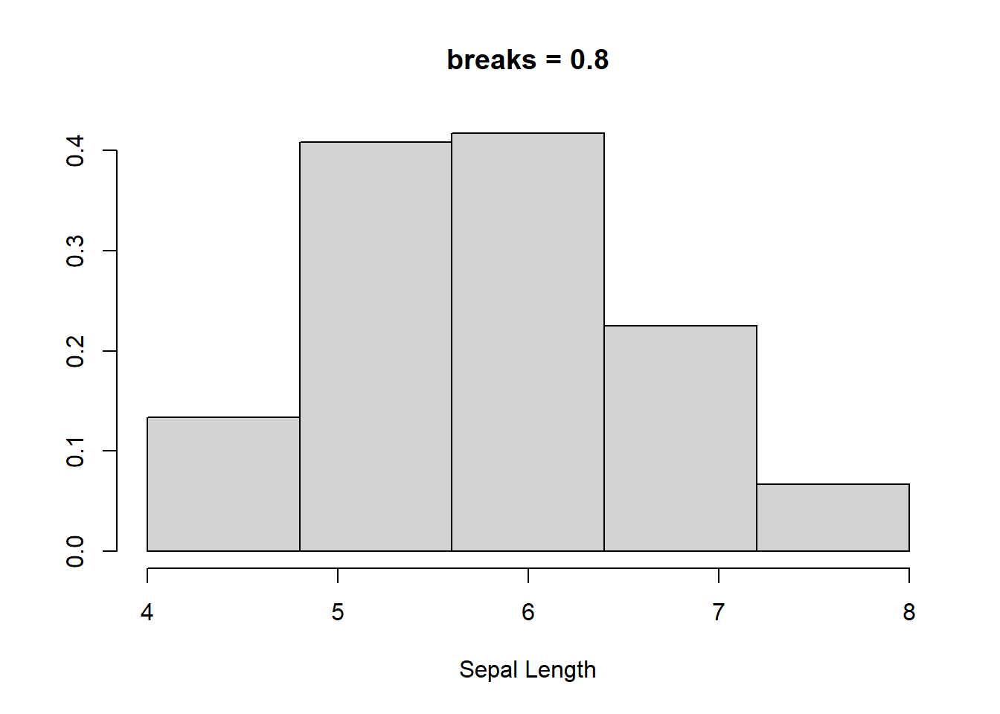
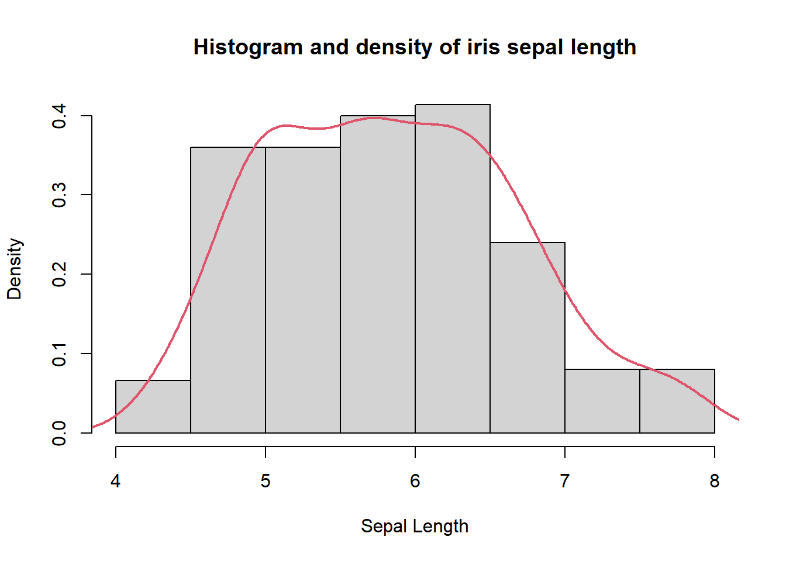
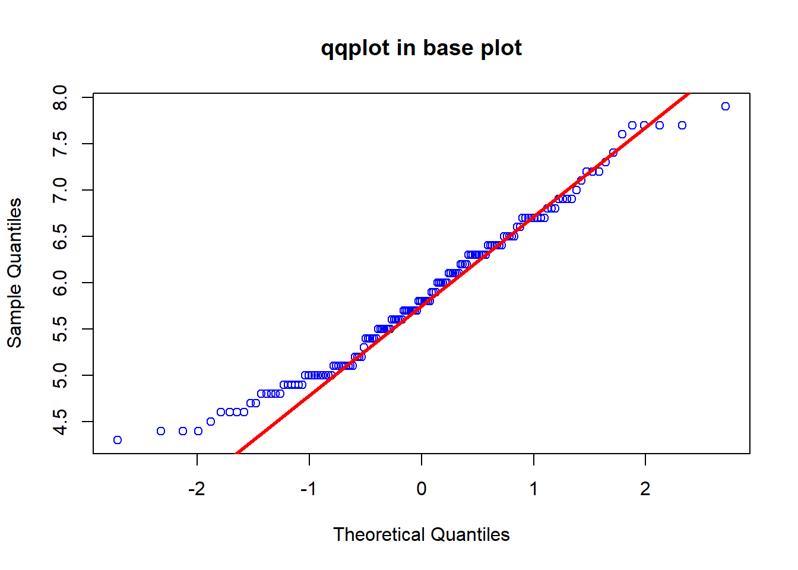
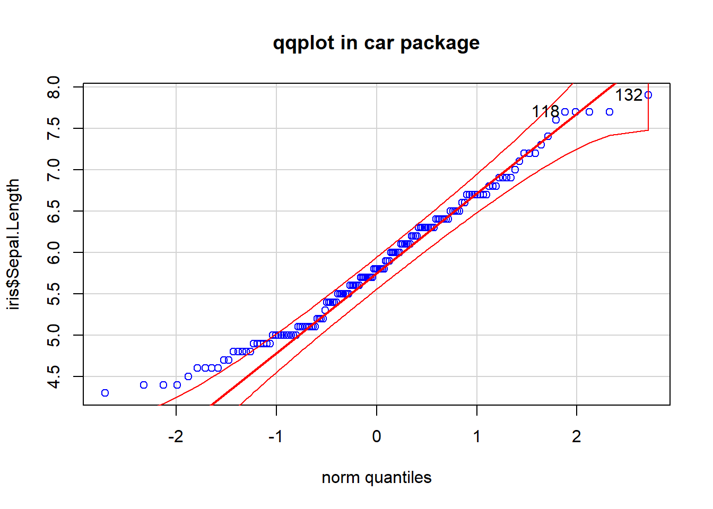
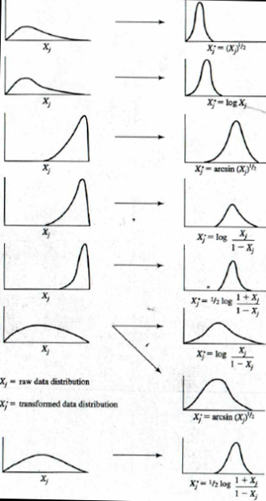
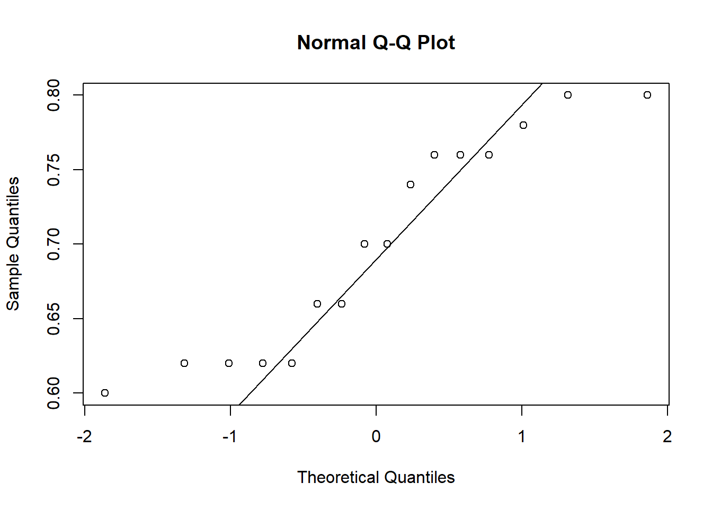

| Sepal.Length | Sepal.Width | Petal.Length | Petal.Width | Species |
|---|---|---|---|---|
| 5.1 | 3.5 | 1.4 | 0.2 | setosa |
| 4.9 | 3.0 | 1.4 | 0.2 | setosa |
| 4.7 | 3.2 | 1.3 | 0.2 | setosa |
| 4.6 | 3.1 | 1.5 | 0.2 | setosa |
| 5.0 | 3.6 | 1.4 | 0.2 | setosa |
| 5.4 | 3.9 | 1.7 | 0.4 | setosa |
23 常用统计方法简介
23.1 正态分布检验
注意
对于是否需要正态分布转换，或怎么判断是不是正态分布，有人提出异议，但这不是我一个不搞科研的人该考虑的，我只提供方法。
在进行真正的检验之前，我们很多时候都忽略了进行正态分布的验证。验证是否是正态分布的方法分为两类：
肉眼判断
假设检验
23.1.1 肉眼判断
肉眼判断当然是一句玩笑话，我们不能只凭看两眼数据就认定是否符合正态分布了，我们是通过其与正太分布的数据相比较，并不是直接做个大仙，看上一眼就解决问题了。那么怎么和正态分布的数据做比较呢，所谓没有比较就没有伤害，在这里也是适用的，有正态分布数据比着，那就好判断了。
直方图和密度曲线的比较
第一种方法就是对数据做直方图和密度曲线的图，然后看数据是否基本符合正太分布的特征（也就是那个钟形曲线），这里网上关于 R 验证正态分布的时候使用直方图 hist，以及密度曲线要用的 density，其实二者是一回事，我们了解一下核密度估计。
核密度估计是非参估计的一种，对我们最重要的是不需要先验知识，即可根据数据的本身特点和性质来进行拟合分布，查看数据分布的特点，例如对 iris 的数据的萼片长度的分布进行直方图查看：
Code
hist(
iris$Sepal.Length,
freq = FALSE,
breaks = c(seq(4, 8, 0.05)),
main = "breaks = 0.05",
xlab = NULL
)
hist(
iris$Sepal.Length,
freq = FALSE,
breaks = c(seq(4, 8, 0.3)),
main = "breaks = 0.3",
xlab = NULL,
ylab = NULL
)
hist(
iris$Sepal.Length,
freq = FALSE,
breaks = c(seq(4, 8, 0.5)),
main = "breaks = 0.5",
xlab = "Sepal Length"
)
hist(
iris$Sepal.Length,
freq = FALSE,
breaks = c(seq(4, 8, 0.8)),
main = "breaks = 0.8",
xlab = "Sepal Length",
ylab = NULL
)



也就是说，我们划分每组长度的标准（bin 的宽度）不同，肉眼看上去，直方图的形状是有变化的。而且 bin 的宽度不管怎么变化，显示的分布并非是连续的变化，要避免这些问题，就需要引入核密度估计，核密度估计的曲线根据所有点在某个特定位置的权重来计算其在整个分布曲线上的距离，当在某一区域点的数量增加时，估计的概率就会增大。
Code
hist(
iris$Sepal.Length,
freq = FALSE,
xlab = "Sepal Length",
main = "Histogram and density of iris sepal length"
)
lines(density(iris$Sepal.Length), col = 2, lwd = 2)
需要注意的是，不管怎样，我们很难得到非常完美的，或者理论上的分布曲线，只要曲线有一个峰值并且大致两侧对称，我们就认为是正太分布了。
23.1.2 Q-Q plot
相比密度直方图，Q-Q 图可能是更常见更容易理解的一种方式，Q 表示分位点，例如标准的正太分布曲线，0.5 的分位点是零，0.95 的分位点是 1.64。
它的实现就是使用测量数据和理论分布的数据进行作图，如果测量数据是正态分布，那么很明显，它和理论正态分布所成的散点图应该在一条直线上。
在 R 里，base plot 可以直接使用 qqnorm 和 qqline 来实现，但 car 包里 qqPlot 的实际上更贴心
Code
library(car)
qqnorm(iris$Sepal.Length, pch = 21, col = 'blue', main = 'qqplot in base plot')
qqline(iris$Sepal.Length, col = "red", lwd = 3)
qqPlot(iris$Sepal.Length, main="qqplot in car package", col="blue", col.lines="red")[1] 132 118

car 会贴心的画出 95% 置信区间，以及 outlier（原始数据）。这个与上面提到的一样，不可能完全在一条直线上，大致是在一起就可以了。
23.1.3 假设检验
上面的肉眼判断毕竟太过主观，要客观的评价，还是需要通过假设检验，用的很多，非常有名的方法为：Shapiro-Wilk 检验，它的零假设是样本来自正态分布的母本，这样的话，我们需要 p 值大于 0.05。
还是上面的数据：
Code
shapiro.test(iris$Sepal.Length)
Shapiro-Wilk normality test
data: iris$Sepal.Length
W = 0.97609, p-value = 0.01018非常简单，一行代码搞定，结果让我们非常失望，数据不是正态分布。事实证明，上面的肉眼判断，我的看法是错误的。
尽管值略有差别，充分体现了主观的判断的不靠谱。那我们只能试试怎么将数据转换为正态分布的方法了。
23.1.4 常用的正态转换方法
如果样本量超过了30，或者50更好，正态分布的检验并非十分重要。转换为正态分布的方法比较多，下面的一幅图即可概括：

方法这么多，其实也没太多特别的，就是将数据转换一下，例如我们使用最简单的对数转换看一下：
Code
shapiro.test(log10(iris$Sepal.Length))
Shapiro-Wilk normality test
data: log10(iris$Sepal.Length)
W = 0.98253, p-value = 0.05388其他方法有需要的可以尝试一下。
23.2 t 检验
关于t 检验，有的资料上特意强调主要用于样本含量较小（n<30）这一点，实际上 t 检验并非特意需要降低样本量，来自于我多年前本科时候的印象里，样本量小是不得以的选择，好像是啤酒酿造的时候的检验，样本量低，并非是特意控制到较低的数量，我查了一下网上的资料，并没有找到他起源的具体说法，但我已经没有读书时的生物统计课本了，因此只好做罢，各位有来源的可以告知。实际上 t 检验并没有限制样本的数量，资料上反而讲到，t分布是接近标准正态分布的钟型分布，当样本量大于 30 时，通常使用正态分布。也就是说只要是正态分布或近似正态分布，就可以使用 t 检验。
t检验是用 t 分布理论来推论差异发生的概率，他的检验有三种类型：
- one-sample t-test，用来比较单个样本平均值和一个给定的平均值（理论值）的差异
例如，假设我们调查了一组男学生的身高，看看他们的平均值是否等于 170 cm。
- independent samples t-test（ unpaired two sample t-test），完全随机设计 (两组独立样本) 两样本均数比较的差异
例如，我要检查某有机肥是否有促进小麦品质的作用，我选了一组小麦施用该肥料，另一组施用常规化肥，最后我检查某指标之间，二者是否有差异。两组不同的小麦，他们之间是没有关系的，独立的
- paired t-test，用于表两个相关的样本组之间的差异（与 0 比较）
例如，我要检验某杀虫剂是否有效果，我随机抽取一定样本，记录杀虫前后虫子的量。二者来自同一样本，是密切相关的。
下面的内容我们就用胡诌的例子和数据来演示相关的分析。
23.2.1 单样本 t 检验
例如，我们制定了一个标准，对于针对某虫害的杀虫剂，以一定的量喷洒 2 h 后，虫子的数量应减少 70%，下面我们来瞎编 16 个样本 2 h 后虫子数据降低量的数据：
Code
set.seed(321)
pct_pesticide <- sample(seq(0.6, 0.8, by = 0.02), 16, replace = TRUE)为了满足条件，我们可以用 Q-Q 图看一下数据是否基本符合正态分布 (当然可以使用正态分布的随机数，但是那样有点太假了，我尽量把数据造的接近真实点)：
Code
qqnorm(pct_pesticide)
qqline(pct_pesticide)
从图上看，尽管有点散乱，但还是满足我们正态分布的要求的。这里仅作为演示，后面的内容，为节省篇幅，不在针对造的数据验证了。
下面我们就是来进行检验了，那我们的 0 假设是二者相等，那么备择假设呢，我们可以选择这个药结果比较好，效果大于 0.7：
Code
t.test(pct_pesticide, mu = 0.7, alternative = 'greater')
One Sample t-test
data: pct_pesticide
t = 0, df = 15, p-value = 0.5
alternative hypothesis: true mean is greater than 0.7
95 percent confidence interval:
0.6684776 Inf
sample estimates:
mean of x
0.7 上面的结果是 p 值比较大，我们接受零假设，说明该杀虫剂合格，但他仅仅是刚刚合格，没有接受备择假设。
那如果我们的备择假设是该药品不合格，低于 0.7，会有差别吗？
Code
t.test(pct_pesticide, mu = 0.7, alternative = 'less')
One Sample t-test
data: pct_pesticide
t = 0, df = 15, p-value = 0.5
alternative hypothesis: true mean is less than 0.7
95 percent confidence interval:
-Inf 0.7315224
sample estimates:
mean of x
0.7 其实看 p 值我们就明白了，备择假设没有影响我们的这个结果，那我们的备择假设如果选择 two.side，也就是默认选项呢？
Code
t.test(pct_pesticide, mu = 0.7)
One Sample t-test
data: pct_pesticide
t = 0, df = 15, p-value = 1
alternative hypothesis: true mean is not equal to 0.7
95 percent confidence interval:
0.6616734 0.7383266
sample estimates:
mean of x
0.7 对于这个实验，没有影响结果，结论是接受 H0，但我们可以看一下另外的一组数据：
Code
pct_high <- sample(seq(0.8, 0.96, by = 0.02), 16, replace = TRUE)
t.test(pct_high, mu = 0.7)
One Sample t-test
data: pct_high
t = 13.027, df = 15, p-value = 1.396e-09
alternative hypothesis: true mean is not equal to 0.7
95 percent confidence interval:
0.8547314 0.9152686
sample estimates:
mean of x
0.885 Code
t.test(pct_high, mu = 0.7, alternative = 'less')
One Sample t-test
data: pct_high
t = 13.027, df = 15, p-value = 1
alternative hypothesis: true mean is less than 0.7
95 percent confidence interval:
-Inf 0.909895
sample estimates:
mean of x
0.885 Code
t.test(pct_high, mu = 0.7, alternative = 'greater')
One Sample t-test
data: pct_high
t = 13.027, df = 15, p-value = 6.979e-10
alternative hypothesis: true mean is greater than 0.7
95 percent confidence interval:
0.860105 Inf
sample estimates:
mean of x
0.885 可以看到如果是双尾的检验，那么对我们这个例子是不合适的，我们不知道杀虫剂是否合格，对于单尾的检验，备择假设是杀虫剂不合格，它的 p 值是 1，也就意味着我们 100% 不可能选择备择假设，杀虫率不能低于 70%，尽管看上去奇怪，但也能判断结果，最后一个备择假设则是看上去最正常的，说明杀虫剂效果高于我们制定的标准。所以，备择假设是不能随便假设的，以免增加工作量。
23.2.2 独立样本 t 检验
独立样本的检验就不造数据了，还是 iris 吧，我们这次改为花萼宽度，看两个种之间有没有明显差别。
Code
library(data.table)
iris <- data.table(iris)
t.test(iris[Species == "setosa", Sepal.Width], iris[Species == "versicolor", Sepal.Width])
Welch Two Sample t-test
data: iris[Species == "setosa", Sepal.Width] and iris[Species == "versicolor", Sepal.Width]
t = 9.455, df = 94.698, p-value = 2.484e-15
alternative hypothesis: true difference in means is not equal to 0
95 percent confidence interval:
0.5198348 0.7961652
sample estimates:
mean of x mean of y
3.428 2.770 p 值太小，也就是接受备择假设，这两个之间的差异不为 0。
23.2.3 配对样本的 t 检验
配对样本和独立样本，最大的区别就是二者是否独立，配对当然是不独立，上个样本有现成的数据，这个我觉得还是再造点看上去真实的数据吧，为了省事，我提高样本量，不检测是不是近似正态分布了：
假设我在测量高温短时间内对植物光合的影响，我想知道 35 摄氏度和 40 摄氏度对光合速率影响有没有显著差别，为避免其他效应的影响，我控制其他参数不变，植物处于饱和光照射下已经达到稳定状态，我在两个温度下连续测量了两个稳定的光合速率：
Code
set.seed(123)
A35 <- sample(seq(10, 13, by = 0.1), 50, replace = TRUE)
A40 <- sample(seq(7, 10, by = 0.1), 50, replace = TRUE)
write.csv(data.frame(a35= A35, a40 = A40), "data/photosyn_temp.csv")还是用第一次的数据，到处后供 python 继续使用。
Code
pair_data <- read.csv("data/photosyn_temp.csv")
t.test(pair_data$a35, pair_data$a40, paired = TRUE)
Paired t-test
data: pair_data$a35 and pair_data$a40
t = 16.747, df = 49, p-value < 2.2e-16
alternative hypothesis: true difference in means is not equal to 0
95 percent confidence interval:
2.569619 3.270381
sample estimates:
mean of the differences
2.92 结论符合我故意让他们有差距的目的。